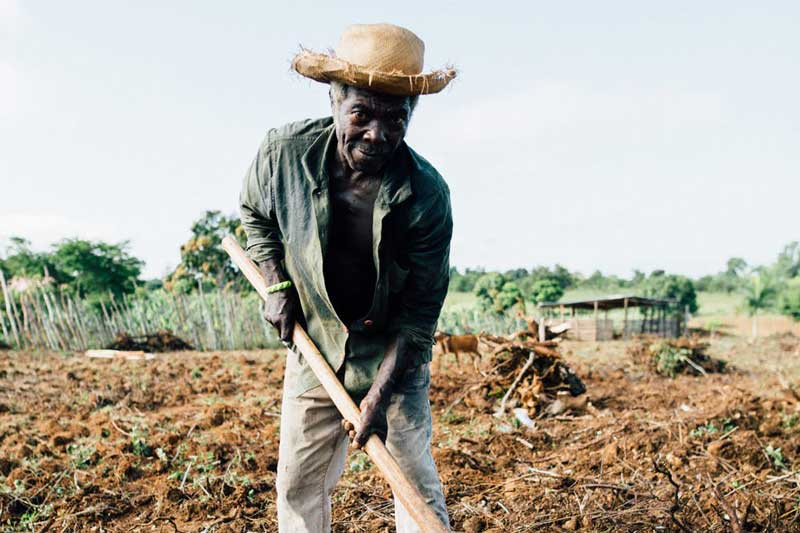

Agriculture/food security is complex and requires various solutions, multiple stakeholders, and a strategic long-term approach. At the same time, we need to start thinking about different ideas or ways around ensuring food security. Whilst tech is not a silver bullet, a hackathons can be a good way to bring new ideas, smart people together to think of innovative ways to approach the problem.
We are excited to have a multi-stakeholder approach with government, private sector and tech companies in this approach. We have identified four over-arching challenges in the sector and five problem statements based on the challenges to form the basis of this data driven hackathon.

Due to a variety of reasons including lack of inputs, seeds, fertilizers, machinery, irrigation, ability to afford inputs, financing, insurance, etc. The majority are small farms and lack economies of scale meaning that productivity is very low. Some of these can only be addressed through government eg land issues, but there are other solutions that the private sector is addressing and can continue to address.
Particularly post-harvest loss. Most of the produce is lost, over 50% in some value chains. The cost of transport and lack of cold-storage facilities means that you will have rotting tomatoes, cabbages, etc in rural areas while people starving in informal settlements and expensive products in urban areas. No incentive to increase productivity from a farmer’s perspective if so much waste.
Farmers struggle to sell their produce, middlemen take advantage and farmers get paid very little. As most of what they produce is wasted or sold at low prices, farmers have no incentives to improve productivity/yields. Little or no value addition means that Kenya ends up importing food. Many issues around demand and trust, eg high aflatoxin levels, buying local fruits or products, and many paying a premium on imported fruits and veg. Poor marketing is another issue- Kale is a superfood Sukuma is not, and guacamole is not produced/exported in Kenya but avocadoes are exported. Can we get Kenyan “super-foods” and value-added products to global markets
There is a lack of granular and real time food security data in the region meaning that humanitarian programme decisions are not always based on the most accurate information to be agile or responsive to changing community needs. It is vital to provide decision-makers with accurate and timely information on the food security and nutrition situation in an area so they can design and implement the most appropriate emergency programmes, interventions, and policies, using resources in the most efficient way. However, many of the world’s most vulnerable people live in hard-to-reach, insecure, or remote areas. How can we utilise the power of mobile technology (voice and text surveys) and data available from mobile operators (such as anonymized call data records) to get a deeper understanding and improve the responsiveness of humanitarian programmes and providing more granular and timely food security data?
How to get extension services- i.e. information through multiple channels to help people/farmers improve productivity?
How do we develop better early warning systems to help with better preparation of crisis and how do we use data to enable real time decision making once we are in crisis?
How do we get pricing information to farmers/people in rural areas?
How do we get availability data- what is being grown currently in Kenya to buyers and food producers?
How do we get demand data- what people are buying within Kenya and externally to farmers?